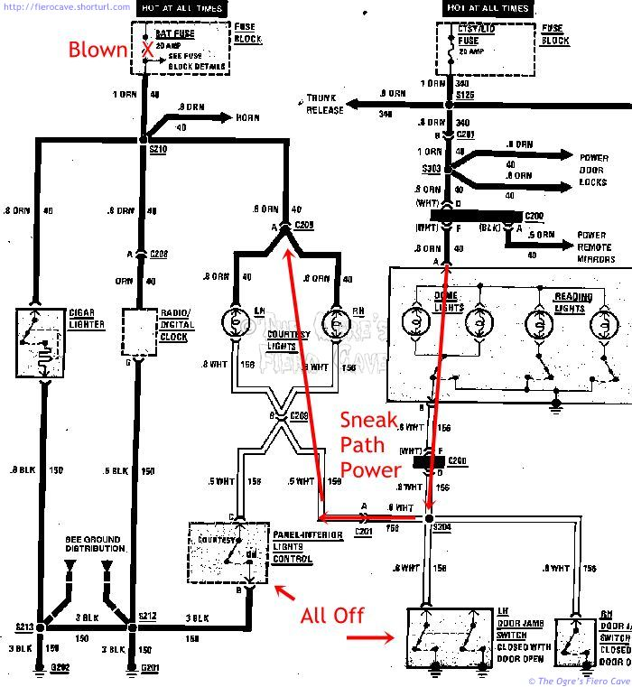
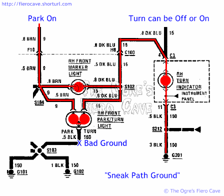

Go Home
Site Map
Go Home
Site Map
Sneak Path
What is a Sneak Path?
A "Sneak Path" can be a ground or power. Sneak because it have ground or power when you don't expect it. Examples:
- You check the Fuse for the Radio and it looks ok. But you didn't check the BAT fuse. Radio uses two fuses.
- Courtesy light came on when door are closed. Check fuse and BAT is blown.
- Tail light won't turn on very bright. (Turn signal doesn't flash in Notchback.)
Two are power sneak and one is ground sneak.
Sneak Power Example
Bat fuse is blown and courtesy light option is installed. Note: Can work in other direction when the Ctsy/lid fuse is blown.
Csty/lid fuse and dome light give sneak path. Here's how they work... Courtesy option causes it. Circuits connect at spice S304 under dash. Horn try to run thru dome and courtesy light instead of Bat fuse and can't handle the amps. Take out both courtesy lights and horn, radio clock, cig lighter, goes dead.

Sneak Ground Example
These two problems are real on Fiero.
This First Example can happen on any GM car with combinds brake and turn in back, like Fiero notch back. Socket doesn't make ground connected and you get this:

Next Example happens with all Fiero. When Front park/turn bulb gets a bad ground and parking switch in on then Dash turn bulb will be on either or not turn signal in used.

Bad Ground for Bulb(s) in question can mean:
- Actually ground wire to the socket.
- Bulb has no ground contact w/ the socket. (See Light bulb article for how to fix back socket.)
- Bulb is bad, likely lost grounwire between glass and base.
Quick test to check from bad/loose ground...
Turn parking light on:
- Front- Is turn signal on dash is lit? Ground problem in front park/turn bulb or socket.
- Rear- In notchie cars, If any bulb has both filament lit then that bulb is not getting ground. (Yes, you need to take rear housing apart.)
How to I fix it?
Power sneak is usually easy to fix but Ground can be a real problem. Some times ground sneak can be on the other side of the car or in a light socket.
First check all the fuse. Like radio, you have two fuses. (Not real a sneak I know.) But in the second one, sometime thing are not dead. Courtesy light (the low ones, not Dome light. It's an option.) came on when BAT fuse is blown. Something else is using courtesy light as a power source (or maybe ground) instead of the BAT fuse. (Check you lighter!)
Light bulb or socket? Replace the bulb first. Then fix the socket ground. Both bulbs on a side? Check sockets then check ground wire or when it screws into the frame.
Is that all?
No. The common ones but not all of the problem. It should give you a start.